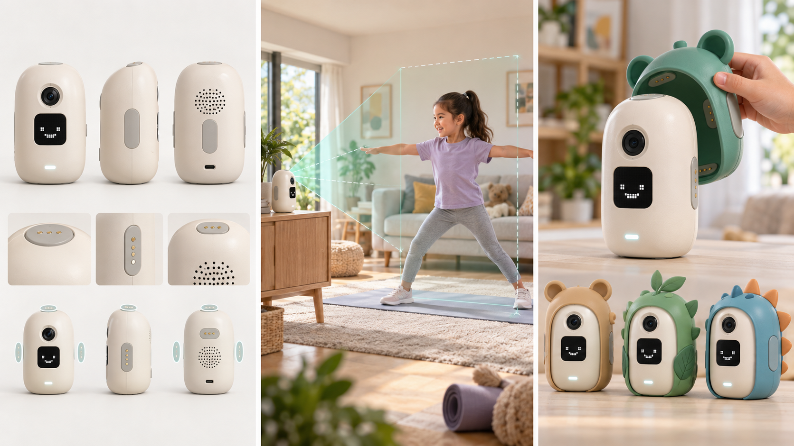

01
文档介绍
先明确这份文件要解决什么问题
目录
1.1 文档目的
本文件用于向硬件部门说明儿童AI运动陪伴机器人 MVP 要完成的产品功能、使用环境和硬件能力要求，为主控、摄像头、显示、音频、通信、供电和结构方案的选型提供依据。
本文件描述的是产品需求，不直接指定芯片品牌、电路实现和最终量产参数。硬件部门需要根据这些需求提出可行方案、候选器件、风险和验证方法，再由产品、硬件、设备端、算法和测试共同评审。
1.2 文档范围
本文件包含
- MVP 功能闭环和设备在系统中的角色
- 家庭运动场景与核心使用流程
- 各硬件部件需要提供的能力
- 接口、结构、供电、散热和安全要求
- 样机阶段的性能要求与验收方法
本文件不包含
- 原理图、PCB 和详细电路设计
- 最终芯片型号、供应商和量产 BOM
- 完整 ID 设计和全套角色外壳
- 算法模型、App 页面和服务端实现细节
- 生产计划、认证计划和量产排期
1.3 硬件部门需要输出
整机硬件架构与主备选方案
关键器件候选清单及选择理由
接口、电源和散热初步方案
结构布局和安装空间建议
关键风险及需要联合验证的指标
样机验证结果和已知限制
02
MVP产品定义
硬件选型必须围绕这条产品闭环展开
一句话定义：这是一台放在家庭桌面或矮柜上的小型儿童运动陪伴设备。家长通过手机 App 下发运动任务，设备引导孩子站到合适位置，采集全身画面，配合算法完成动作识别、有效计数和基础姿态提醒，并把真实结果同步回 App。
2.1 MVP必须完成的核心闭环
家长下发任务动作、目标次数、儿童信息
→
设备引导并采集联网、站位、倒计时、全身画面
→
识别反馈与记录有效计数、姿态提醒、结果同步
设备端承担
- 接收、确认并保存一条运动任务
- 通过像素屏、状态灯和语音完成必要引导
- 稳定采集儿童全身运动画面
- 向动作与姿态算法提供连续图像和状态
- 维护次数、暂停、离画、恢复和完成状态
- 网络异常时保留进度，恢复后补传结果
App和算法承担
- 家长创建任务、设置动作和目标次数
- 展示完整任务信息、运动记录和分析结果
- 提供 AI 运动分析和后续建议
- 判断动作是否有效并输出姿态结果
- 算法部署位置由技术评审确定，硬件需提供稳定输入和及时反馈能力
2.2 首版功能边界
| 类别 | 首版纳入 | 首版不做或暂不冻结 |
|---|---|---|
| 运动动作 | 开合跳、深蹲起；保留扩展动作能力 | 动作库规模化扩充；高抬腿是否纳入由算法评审 |
| 姿态能力 | 入镜、距离、身体完整性、明显偏移，以及约定场景下的基础姿态提醒 | 医疗诊断、精细康复评估和复杂动作纠错 |
| 本地显示 | 像素表情、状态、倒计时、简短次数和异常图标 | 大尺寸触控 UI、课程视频和完整报告 |
| 产品形态 | 固定胶囊核心机身，验证 1 至 2 套磁吸角色外壳 | 完整角色体系、量产外观和最终材料工艺 |
| 供电 | USB-C 稳定供电为必须能力，预留移动使用方案评审 | 内置电池容量、续航和充电策略暂不冻结 |
| 其他 | Wi-Fi、基础蓝牙、状态灯、扬声器、麦克风预留 | 4G、NFC、移动底盘、自动云台、云端大模型必选能力 |
03
典型使用场景与操作流程
硬件部门先理解孩子和家长实际怎么使用
3.1 使用环境
| 项目 | 场景说明 | 对硬件的影响 |
|---|---|---|
| 摆放位置 | 家庭桌面、矮柜或稳定台面，儿童在设备前约 1.5 至 3 米运动 | 固定前置摄像头需覆盖全身；机身平底防滑，镜头角度不能轻易偏移 |
| 光照 | 普通室内光、背光、较暗房间，可能存在电视或窗户干扰 | 摄像头需要基本宽容度和稳定帧率，算法联合测试后冻结参数 |
| 声音 | 家庭日常噪声，孩子与设备保持运动距离 | 提示音需听清但不能刺耳；出声孔不被角色外壳遮挡 |
| 网络 | 家庭 Wi-Fi 质量不稳定，可能短时断网或路由器重启 | 任务和结果需本地缓存；断网不应导致当前运动进度丢失 |
| 儿童接触 | 孩子可能按压、碰撞、拉线或拆装外壳 | 无尖锐边缘、夹手点和易吞咽小件；磁吸外壳需防误脱落 |
3.2 一次完整使用流程
从家长下发任务到结果同步
1 任务到达
设备收到动作、目标次数和任务 ID，保存后通过像素屏、状态灯和声音确认。
2 隐私确认
设备确认摄像头处于允许采集状态，隐私状态与状态灯、App 一致。
3 入镜与站位
摄像头检测儿童是否完整入镜、距离是否合适，语音提示前后移动或调整方向。
4 准备开始
准备条件满足后显示并播报倒计时，防止孩子尚未站稳就开始计数。
5 运动执行
连续采集图像，算法输出动作阶段、有效动作和姿态事件，设备只对有效动作加一。
6 过程反馈
像素屏显示简短次数或状态，扬声器提供计数、鼓励和不过度频繁的姿态提醒。
7 暂停恢复
孩子离画或主动暂停时保存进度；重新入镜并满足条件后继续，不从零开始。
8 完成同步
设备先在本地保存结果，再回传 App；断网时等待重连补传，避免重复记录。
04
系统角色与硬件架构
说明数据从哪里来、在设备内经过什么、最后输出到哪里
输入与感知App任务
前置摄像头
本地操作
电源与温度状态
前置摄像头
本地操作
电源与温度状态
→
设备核心主控与系统
任务状态机
算法接口
存储与日志
任务状态机
算法接口
存储与日志
→
输出与连接像素屏与状态灯
扬声器
Wi-Fi与蓝牙
结果回传App
扬声器
Wi-Fi与蓝牙
结果回传App
| 模块 | 主要职责 | 与其他模块的关系 |
|---|---|---|
| 主控与操作系统 | 同时管理摄像头、显示、音频、通信、存储、状态机和算法接口 | 决定所有外设接口、性能余量、驱动适配和升级恢复能力 |
| 视觉采集 | 稳定提供儿童全身运动画面，支持入镜、动作和姿态判断 | 与算法共同确定分辨率、帧率、视场角、安装高度和距离 |
| 人机反馈 | 通过像素屏、状态灯和声音表达任务状态、倒计时、次数与异常 | 小屏不承担复杂文字，完整内容由 App 展示 |
| 无线通信 | 接收任务、同步状态和结果，支持配网、重连、重试与去重 | 网络异常不能破坏设备内真实状态和当前进度 |
| 本地存储 | 保存系统、任务、进度、结果、配置和故障日志 | 需要支持断电恢复、升级回滚和问题定位 |
| 供电与热管理 | 为摄像头、主控、显示、音频和无线模块稳定供电并控制温升 | 必须考虑满负载、外壳遮挡和儿童可触区域安全 |
05
MVP产品形态要求
按参考形态明确结构边界，不把概念图当作冻结尺寸

形态方向：小型圆角胶囊核心、上部固定前置摄像头、正面像素状态屏、平底防滑、顶部及侧背磁吸角色外壳接口。图片用于辅助选型和结构讨论，不代表最终 ID、尺寸和材料。
| 结构区域 | 产品要求 | 硬件与结构需要确认 | 验证重点 |
|---|---|---|---|
| 固定核心机身 | 主控、相机、像素屏、音频、通信、供电和散热固定在核心机身内，不随角色外壳更换 | 内部空间、维护拆装、线缆、天线、散热和器件替换路径 | 连续运行、拆装维护、跌落后功能和外观状态 |
| 前置摄像头 | 固定在机身正面上部，角色外壳不能遮挡镜头或改变安装角度 | 镜头开窗、固定方式、隐私遮挡或硬件断电方案 | 1.5 至 3 米全身覆盖、背光、弱光、左右偏移 |
| 像素状态屏 | 正面显示表情、状态、倒计时和简短数字，不承担复杂界面 | 显示技术、尺寸、亮度、点阵密度、视角和盖板 | 不同距离、亮度和角度下能否辨识关键状态 |
| 平底与重心 | 机身自然直立，不设置独立宽大底座；装上最重外壳后仍稳定 | 底部面积、内部配重、防滑材料和电源线出口 | 按键操作、轻碰和拉线时不倾倒、不明显滑移 |
| 磁吸角色外壳 | 顶部、侧面和背部采用统一连接点，基础外壳可快速装卸 | 磁吸方向、吸力、卡扣、防呆、寿命和儿童拆装安全 | 不遮挡视场、屏幕、音频、天线、散热和接口 |
06
硬件配置需求
以下是硬件部门进行选型时需要逐项响应的核心内容
参数使用原则：“建议范围”用于缩小候选方案，不是已经冻结的技术规格。硬件部门应给出能否满足、候选方案、风险和验证方法；最终数值由样机联合测试后确认。
| 硬件部分 | 产品需要它完成什么 | 选型要求与建议范围 | 需重点确认 | 优先级 |
|---|---|---|---|---|
| 主控平台 | 同时承担系统运行、摄像头采集、像素屏刷新、音频、通信、存储、状态机及动作/姿态算法接口 | 应有足够 CPU、内存和存储余量；能稳定处理不低于 720p/30fps 视频流；是否需要 NPU 或独立算力模块由算法评审 | 驱动成熟度、连续运行、启动时间、功耗、散热、升级回滚和后续扩展 | P0 |
| 前置摄像头 | 在家庭运动距离下持续看到儿童全身，支持入镜、动作识别和基础姿态检测 | 参考不低于 720p/30fps，优先比较 500 万像素广角方案；水平视场、畸变和弱光表现需实测，不直接照搬竞品参数 | 1.5 至 3 米覆盖、儿童不同身高、背光/弱光、边缘畸变、固定角度和隐私状态 | P0 |
| 像素状态屏 | 表达眼睛表情、联网、任务、倒计时、简短次数、暂停、完成和异常状态 | 小型 OLED、LED 点阵或同类低功耗显示均可；不要求大触控屏，关键状态在运动距离下可辨认 | 尺寸、点阵密度、亮度、视角、刷新、功耗、寿命和外壳开窗 | P0 |
| 本地按键或触控区 | 完成确认/开始、暂停/继续和返回等少量核心操作 | 优先使用明确、可靠且适合儿童的操作方式；不依赖复杂手势，关键操作有防误触 | 操作位置、按压力度、干湿手、连续操作、误触和机身稳定性 | P0 |
| 扬声器 | 播放站位、倒计时、计数、姿态提醒、鼓励、完成和错误短提示 | 内置全频扬声器；音量可调，在普通家庭噪声下听清，不先冻结功率 | 腔体、出声方向、音量上限、破音、与麦克风同时工作时的回声和啸叫 | P0 |
| 麦克风 | 为后续语音唤醒或简单语音输入预留，首版不作为核心闭环阻断项 | 预留近场收音能力和接口；不要求云端大模型作为硬件验收条件 | 安装位置、扬声器回声、噪声、隐私指示和默认录音策略 | P1 |
| Wi-Fi | 接收任务、同步状态和结果、支持升级与日志上传 | 支持家庭常见 2.4GHz 网络，建议 Wi-Fi 5 或以上；是否增加 5GHz 由成本与天线评审 | 配网、穿墙、断网重连、吞吐、外壳对天线的影响和无线合规 | P0 |
| 蓝牙 | 用于近距离发现、辅助配网或维护，不承担核心结果同步 | 参考蓝牙 5.0 或以上，具体角色由通信方案确定 | 与 Wi-Fi 共存、配对安全、距离、断开恢复和功耗 | P1 |
| 本地存储 | 保存系统、当前任务、已确认次数、未同步结果、配置和故障日志 | 容量应覆盖系统、应用、升级回滚和不少于约定数量的未同步记录；默认不长期保存原始视频 | 断电写保护、寿命、日志增长、升级空间和异常恢复 | P0 |
| 供电与USB-C | 在摄像头、算法、屏幕、音频和联网同时工作时稳定供电 | MVP 必须支持 USB-C 外接供电及常见 C-to-C 线缆；适配器功率按峰值负载留余量 | 峰值功耗、掉电、反复插拔、过流/过压/过温保护和接口固定 | P0 |
| 电池预留 | 支持后续短时移动使用或断电保护 | 是否内置电池待评审；如采用，可参考 2000mAh 以上候选并以实际续航、重量和安全为准 | 续航、充电、温升、循环寿命、运输安全、重心和维护更换 | P1 |
| 状态灯 | 让家长看懂电源、联网、采集和异常状态，尤其是摄像头是否工作 | 正面或顶部可见，亮度不过强；隐私相关指示不能被软件静默关闭 | 颜色和闪烁定义、导光结构、角色外壳遮挡和断电后的真实状态 | P0 |
| 温度检测与散热 | 连续运动识别时性能不因过热明显下降，儿童可触区域无危险温升 | 主控和关键热源需要温度监测或等效保护；优先低噪声散热方案 | 满载温升、外壳遮挡、降频、噪声、儿童触摸区域和异常退出 | P0 |
| 调试维护接口 | 支持日志导出、固件升级、恢复、版本查看和样机问题定位 | 预留 USB、串口或等效调试方式；量产前再评估隐藏与权限控制 | 升级失败回滚、恢复入口、接口位置、误操作保护和日志完整性 | P1 |
07
对外接口与结构开孔要求
便于硬件和结构一起确认接口数量、位置与用途
| 接口或开孔 | 建议数量 | 主要用途 | 位置要求 | 备注 |
|---|---|---|---|---|
| 摄像头窗口 | 1 | 全身运动画面采集 | 正面上部，外壳不得遮挡 | 需同步考虑隐私遮挡或硬件开关 |
| 像素显示窗口 | 1 | 表情、状态和简短数字 | 正面，运动距离下可见 | 盖板与机身齐平或内嵌 |
| 本地操作区 | 1组 | 开始、暂停、继续、返回 | 儿童容易触达且不易误触 | 可用按键或小范围触控区 |
| 扬声器出声孔 | 1组 | 语音与提示音输出 | 不贴近桌面，不被外壳遮挡 | 需兼顾防尘与腔体效果 |
| 麦克风孔 | 1组 | 语音能力预留 | 远离扬声器并避免被外壳覆盖 | 首版可作为预留 |
| USB-C | 1 | 供电，按方案可兼顾调试 | 插线后不顶起机身、不易拉倒 | 需确认 C-to-C 兼容和固定强度 |
| 复位或恢复入口 | 1 | 异常恢复或进入维护模式 | 隐藏式，避免儿童误触 | 与恢复策略共同定义 |
| 状态灯窗口 | 1组 | 电源、网络、采集、异常提示 | 正面或顶部清楚可见 | 隐私指示不可被角色外壳遮挡 |
| 磁吸外壳接口 | 多处 | 安装顶部、侧面和背部角色外壳 | 位置统一、防呆，不侵入功能安全区 | 是否增加物理卡扣由结构评审 |
| 散热孔或散热面 | 按方案 | 连续运行散热 | 不能被桌面或角色外壳堵塞 | 避免儿童手指伸入和液体直入 |
08
关键功能需求
统一采用功能描述、输入、处理、输出和异常规则
F01 接收与保存运动任务 P0
功能描述
设备接收 App 下发的动作、目标次数和任务 ID，校验后本地保存并确认任务已生效。
输入
App 任务数据、设备网络状态、当前设备状态。
处理
校验必填字段；相同任务 ID 去重；正在运动时按约定拒绝或排队新任务。
输出
像素屏、状态灯或声音确认；向 App 返回“已收到”或明确错误。
异常规则
断网时不显示虚假接收；格式错误不进入任务；重复任务不能创建两条记录。
硬件关联
Wi-Fi、主控、本地存储、像素屏、状态灯、扬声器。
F02 入镜与站位引导 P0
功能描述
设备判断画面中是否有人、身体是否完整、距离和左右位置是否适合运动，并给出调整提示。
输入
固定前置摄像头连续图像帧。
处理
算法输出无人、过近、过远、身体不完整、偏左或偏右等状态；连续满足准备条件后才允许开始。
输出
语音为主，像素状态和 App 为辅。
异常规则
镜头被遮挡、画面过暗或采集失败时不进入运动状态，并给出可理解提示。
硬件关联
摄像头、主控/算法接口、扬声器、像素屏、状态灯。
F03 动作识别与有效计数 P0
功能描述
开合跳、深蹲起完成一个有效动作后次数加一；半个动作、幅度不足或动作不确定时不计数。
输入
连续图像帧、动作类型、算法阶段与置信结果。
处理
状态机保证一次完整动作只计一次，并保留已确认次数。
输出
简短次数、计数音效或鼓励提示，并同步 App。
异常规则
画面丢失、帧率不足或算法状态异常时暂停确认，不补造次数。
硬件关联
摄像头、主控/算法算力、内存、存储、显示、音频。
F04 基础姿态检测与提醒 P0
功能描述
在约定场景下识别明显的身体偏移、距离异常、动作幅度不足或姿态问题，并提供非医疗化提醒。
输入
摄像头图像、动作阶段、姿态关键点或算法事件。
处理
持续达到触发条件后提醒；短暂变化不频繁打扰；提醒间隔可配置。
输出
语音提示为主，像素图标和 App 摘要为辅。
异常规则
置信度不足时不做确定性判断；不得把算法不确定结果描述成医学结论。
硬件关联
摄像头、主控/算法算力、扬声器、像素屏、通信。
F05 暂停 离画与恢复 P0
功能描述
孩子主动暂停或暂时离开画面后，设备保留已完成次数；重新入镜并确认后继续。
输入
本地按键/触控、App 指令、离画事件、电源与系统状态。
处理
保存任务 ID、已确认次数和暂停原因；恢复时重新执行入镜检查。
输出
暂停/恢复状态和语音提示，同步 App。
异常规则
重启或异常断电后不得把未完成任务标成完成，也不得重复生成结果。
硬件关联
本地输入、存储、主控、摄像头、显示、音频。
F06 结果保存与同步 P0
功能描述
任务完成后保存动作、目标、有效次数、用时、完成状态和姿态事件摘要，并同步 App。
输入
任务状态机、计数结果、姿态事件、设备时间和网络状态。
处理
结果先本地落盘，再发送；按记录 ID 去重；失败时缓存并重试。
输出
设备给出完成反馈，App 展示完整结果。
异常规则
断网、重连或重复发送时只形成一条主记录；未同步记录不得静默丢失。
硬件关联
本地存储、Wi-Fi、主控、像素屏、扬声器。
F07 隐私与采集状态 P0
功能描述
家长能从物理状态和指示灯判断摄像头是否允许采集，设备不得仅通过软件页面宣称已关闭。
输入
物理遮挡片或硬件开关状态、摄像头供电和驱动状态。
处理
只有硬件状态明确且允许采集时才进入视觉流程。
输出
状态灯、像素屏和 App 保持一致。
异常规则
状态不明、机构未到位或硬件关闭时禁止采集并记录错误。
硬件关联
固定摄像头、物理隐私方案、状态灯、主控 GPIO/电源控制。
09
性能与质量要求
让“可以使用”变成可测量、可复现的判断
| 质量属性 | 产品要求 | 当前建议口径 | 验证方式 |
|---|---|---|---|
| 启动与恢复 | 正常上电后进入可联网、可显示状态；异常重启后能恢复任务或明确提示 | 具体启动时间由硬件方案实测后冻结 | 冷启动、断电重启、升级失败和恢复测试 |
| 视觉稳定性 | 家庭目标距离下连续提供算法可用画面，不明显掉帧、卡死或自动改变角度 | 参考不低于 720p/30fps；最终以算法效果为准 | 连续运动、弱光、背光、边缘站位和遮挡测试 |
| 反馈时效 | 有效动作后次数和声音反馈连续，不让孩子因明显延迟重复动作 | 具体端到端时延由联合测试后冻结 | 记录动作发生、算法输出和设备反馈时间 |
| 网络恢复 | 短时断网不丢任务和结果；恢复后自动重连并补传 | 支持缓存、重试和记录去重 | 断网、换网、路由器重启和重复上报测试 |
| 连续运行 | 摄像头、算法、显示、音频和联网同时运行时不死机、不异常重启 | 样机至少完成持续运行与重复任务测试 | 连续满负载运行，记录温度、帧率、内存和异常 |
| 温升与噪声 | 儿童可触区域无危险温升；散热噪声不明显影响语音提示 | 限值由结构、硬件和安全评审后冻结 | 装壳前后满负载温升与噪声对比 |
| 结构安全 | 无锐利边缘、明显夹手点和易吞咽小件；磁吸外壳不因轻碰脱落 | 角色外壳按儿童接触场景评审 | 装卸循环、轻碰、拉扯、跌落和小件检查 |
| 数据与隐私 | 默认不长期保存原始视频；任务、结果和日志按最小必要原则处理 | 摄像头工作状态必须可见，敏感数据传输需受保护 | 待机、隐私关闭、日志、断网缓存和恢复检查 |
| 维护升级 | 支持版本查看、日志导出、升级和失败恢复 | 调试权限和量产入口后续收口 | 正常升级、断电升级、错误包和回滚测试 |
10
MVP样机验收场景
样机能否进入联调，以完整场景结果判断
| 编号 | 验收场景 | 操作 | 通过标准 | 记录 |
|---|---|---|---|---|
| AC-01 | 任务接收 | 连续发送、重复发送同一任务 | 设备只形成一条有效任务，并明确反馈已收到 | 视频、设备日志、App记录 |
| AC-02 | 全身入镜 | 不同身高、距离、左右偏移、背光和弱光站位 | 能给出正确站位提示，准备条件不满足时不开始 | 样本记录、截图、日志 |
| AC-03 | 开合跳计数 | 有效、半程、不确定动作混合执行 | 有效动作逐次计数，无明显跳数和重复计数 | 人工真值与设备结果 |
| AC-04 | 深蹲起计数 | 有效、幅度不足和中途停顿混合执行 | 仅完整有效动作计数，错误动作不补造次数 | 人工真值与设备结果 |
| AC-05 | 姿态提醒 | 构造约定的距离、偏移或姿态问题 | 持续异常后提醒，短暂变化不过度打扰，提示内容易理解 | 视频、事件日志 |
| AC-06 | 暂停和恢复 | 做到 12/20 后暂停、离画、重新入镜 | 恢复后下一次有效动作是 13，进度不丢失 | 设备与App记录 |
| AC-07 | 断网补传 | 完成任务时断网，随后恢复网络 | 本地结果保留，恢复后只同步一条完整记录 | 网络日志、记录ID |
| AC-08 | 断电恢复 | 运动中和写结果时分别断电 | 重启后不产生虚假完成，任务和记录可按策略恢复 | 日志、存储检查 |
| AC-09 | 隐私状态 | 切换物理隐私状态并重启设备 | 采集、状态灯、像素屏和 App 显示一致；关闭时不能采集 | 视频、电气/状态检查 |
| AC-10 | 装壳后功能 | 分别安装基础角色外壳并连续运行 | 不遮挡镜头、显示、声音、收音、天线、散热和USB-C | 装壳前后对比 |
| AC-11 | 结构稳定 | 安装最重外壳，按键操作、轻碰并轻拉电源线 | 机身不倾倒、不明显滑移，外壳不脱落，镜头角度不变化 | 结构视频与测量 |
| AC-12 | 连续运行 | 循环执行任务并保持摄像头、算法、显示、音频和联网同时工作 | 无死机、异常重启和明显性能下降；温升在评审范围内 | 运行日志与温度记录 |
11
硬件选型前待确认事项
这些问题需要硬件部门在方案评审中给出结论
| 待确认项 | 为什么必须确认 | 希望硬件部门给出的内容 |
|---|---|---|
| 主控和算法部署方式 | 决定摄像头接口、算力、内存、功耗、散热和系统复杂度 | 主方案、备选方案、能力余量、限制和验证方法 |
| 摄像头规格与固定角度 | 直接影响全身入镜、动作识别和姿态检测范围 | 候选摄像头、视场与安装建议、样张和算法联合测试方案 |
| 像素屏方案 | 需要兼顾表情效果、远距离辨识、功耗和机身开窗 | 显示技术、候选尺寸、亮度、点阵密度和驱动接口 |
| 固定相机隐私方案 | 家长必须能判断摄像头是否真正关闭 | 物理遮挡、硬件断电或其他方案对比及默认安全状态 |
| USB-C供电与电池预留 | 影响适配器、峰值功耗、结构空间、重量和使用方式 | 功率预算、适配器建议、电池是否必要及预留方式 |
| 磁吸接口与防脱 | 关系到外壳兼容、儿童安全、视场、散热和重心 | 接口数量、位置、吸力、辅助卡扣和装卸寿命建议 |
| 散热与可触温升 | 胶囊机身紧凑，角色外壳可能进一步影响散热 | 热源分布、散热路径、温度监测和降频/保护策略 |
| 样机调试与恢复 | 联调阶段需要快速定位摄像头、算法、网络和供电问题 | 调试接口、日志、升级、复位和回滚方案 |
评审结论要求：硬件选型不只提交器件型号，还需要说明该方案如何满足本文件中的场景、功能和验收要求；无法确认的指标应标为“待联合验证”，并给出验证条件。